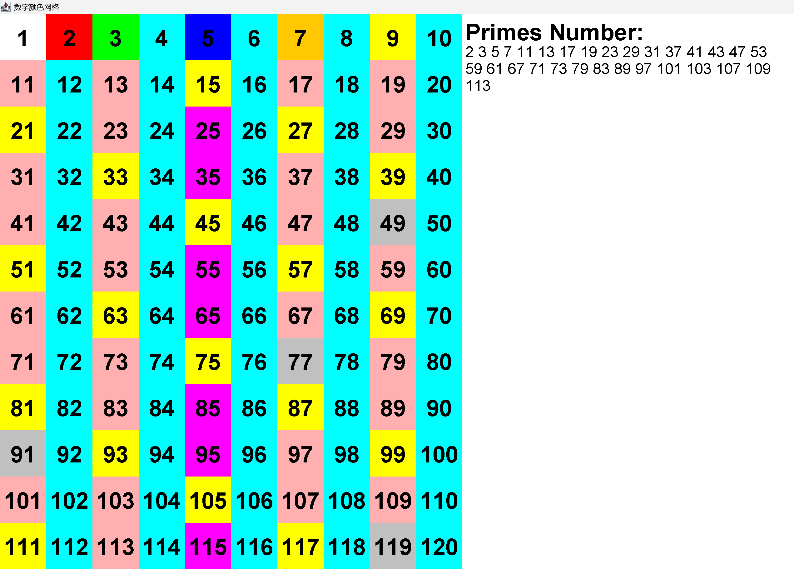
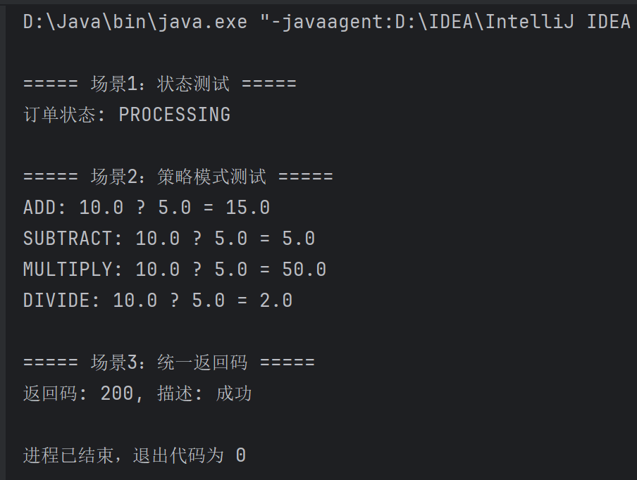
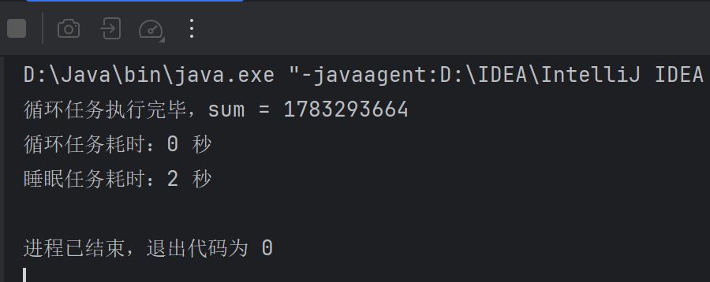
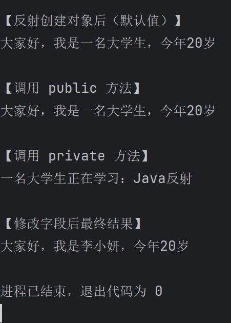
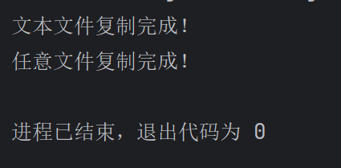
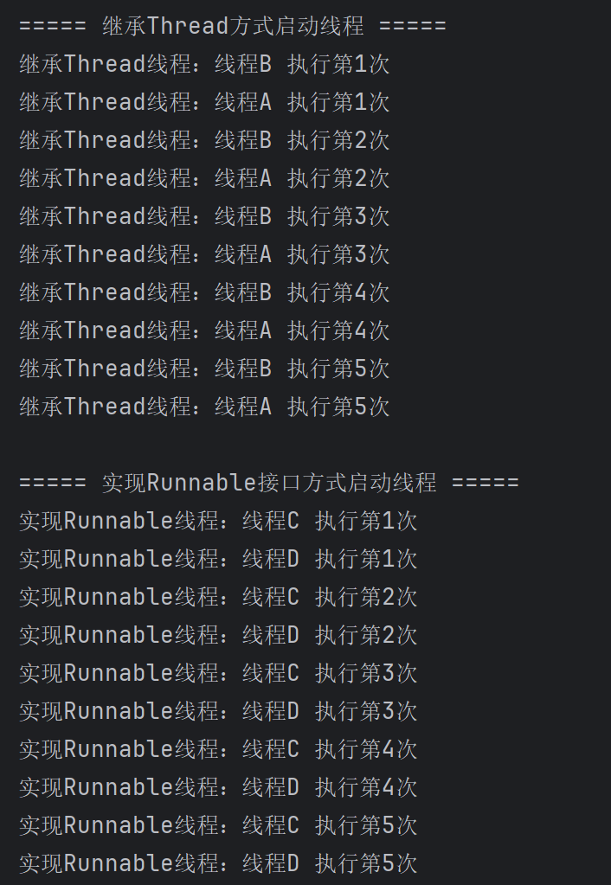
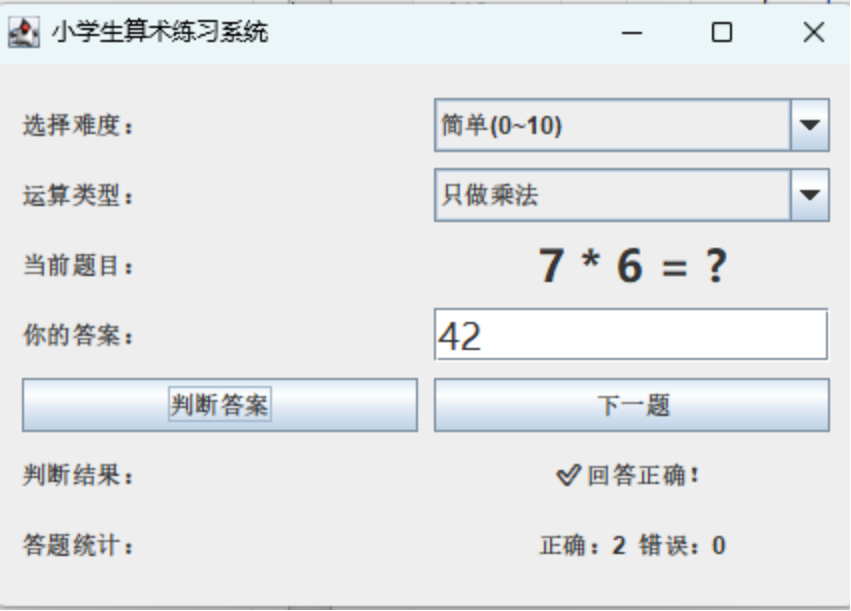
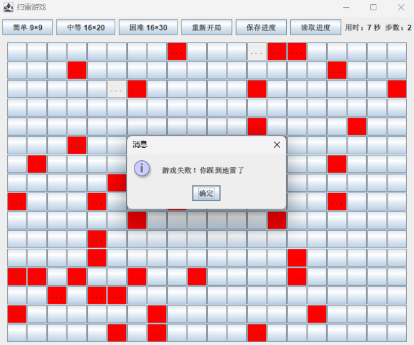
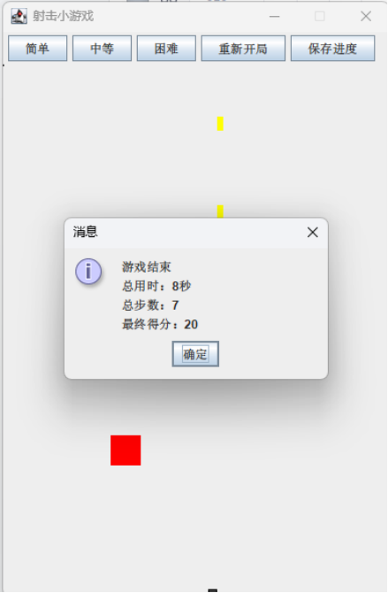

获奖证明：

import javax.swing.*;
import java.awt.*;
import java.util.ArrayList;
import java.util.List;
public class HomeWork extends JPanel {
private final int totalNumbers = 120;
private List<Integer> primes = new ArrayList<>();
public HomeWork() {
setBackground(Color.WHITE);
findPrimes(totalNumbers);
}
private void findPrimes(int n) {
primes.clear();
for (int i = 2; i <= n; i++) {
if (isPrime(i)) primes.add(i);
}
}
private boolean isPrime(int num) {
if (num < 2) return false;
for (int i = 2; i * i <= num; i++) {
if (num % i == 0) return false;
}
return true;
}
private Color getColor(int num) {
switch (num) {
case 2: return Color.RED;
case 3: return Color.GREEN;
case 5: return Color.BLUE;
case 7: return Color.ORANGE;
}
if (isPrime(num)) return Color.PINK;
if (num % 2 == 0) return Color.CYAN;
if (num % 3 == 0) return Color.YELLOW;
if (num % 5 == 0) return Color.MAGENTA;
if (num % 7 == 0) return Color.LIGHT_GRAY;
return Color.WHITE;
}
@Override
protected void paintComponent(Graphics g) {
super.paintComponent(g);
int rows = 12;
int cols = 10;
int panelWidth = getWidth();
int panelHeight = getHeight();
int rightMargin = panelWidth / 3;
int gridWidth = panelWidth - rightMargin;
int cellWidth = gridWidth / cols;
int cellHeight = panelHeight / rows;
int size = Math.min(cellWidth, cellHeight);
g.setFont(new Font("Arial", Font.BOLD, size / 2));
for (int r = 0; r < rows; r++) {
for (int c = 0; c < cols; c++) {
int num = r * cols + c + 1;
g.setColor(getColor(num));
g.fillRect(c * size, r * size, size, size);
g.setColor(Color.BLACK);
FontMetrics fm = g.getFontMetrics();
int strWidth = fm.stringWidth(String.valueOf(num));
int strHeight = fm.getAscent();
g.drawString(String.valueOf(num),
c * size + (size - strWidth) / 2,
r * size + (size + strHeight) / 2 - 4);
}
}
int titleFontSize = size / 2;
g.setColor(Color.BLACK);
g.setFont(new Font("Arial", Font.BOLD, titleFontSize));
int xOffset = cols * size + 10;
int yOffset = titleFontSize + 10;
g.drawString("Primes Number:", xOffset, yOffset);
int primeFontSize = size / 3;
g.setFont(new Font("Arial", Font.PLAIN, primeFontSize));
int maxWidth = rightMargin - 20;
int currentX = xOffset;
int currentY = yOffset + primeFontSize + 5;
for (int p : primes) {
int strWidth = g.getFontMetrics().stringWidth(p + " ");
if (currentX + strWidth > xOffset + maxWidth) {
currentX = xOffset;
currentY += primeFontSize + 5;
}
g.drawString(p + " ", currentX, currentY);
currentX += strWidth;
}
}
public static void main(String[] args) {
JFrame frame = new JFrame("数字颜色网格");
frame.setDefaultCloseOperation(JFrame.EXIT_ON_CLOSE);
HomeWork panel = new HomeWork();
frame.add(panel);
frame.setSize(1000, 700);
frame.setLocationRelativeTo(null);
frame.setVisible(true);
}
}

public class EnumHomework {
enum OrderStatus {
PENDING, // 待处理
PROCESSING, // 处理中
COMPLETED, // 已完成
CANCELLED // 已取消
}
enum Operation {
ADD {
@Override
double apply(double x, double y) { return x + y; }
},
SUBTRACT {
@Override
double apply(double x, double y) { return x - y; }
},
MULTIPLY {
@Override
double apply(double x, double y) { return x * y; }
},
DIVIDE {
@Override
double apply(double x, double y) { return x / y; }
};
abstract double apply(double x, double y);
}
enum ResponseCode {
SUCCESS(200, "成功"),
ERROR(500, "服务器错误"),
NOT_FOUND(404, "未找到");
private final int code;
private final String message;
ResponseCode(int code, String message) {
this.code = code;
this.message = message;
}
public int getCode() { return code; }
public String getMessage() { return message; }
}
public static void main(String[] args) {
OrderStatus status = OrderStatus.PROCESSING;
System.out.println("\n===== 场景1：状态测试 =====");
System.out.println("订单状态: " + status);
double a = 10, b = 5;
System.out.println("\n===== 场景2：策略模式测试 =====");
for (Operation op : Operation.values()) {
System.out.println(op + ": " + a + " ? " + b + " = " + op.apply(a, b));
}
ResponseCode code = ResponseCode.SUCCESS;
System.out.println("\n===== 场景3：统一返回码 =====");
System.out.println("返回码: " + code.getCode() + ", 描述: " + code.getMessage());
}
}

形式化方法是一种用数学语言和逻辑来描述、建模和验证软件或系统的方法。它把系统从模糊的自然语言转化为精确的数学模型，通过数学推理或自动工具检查系统是否正确、安全或可靠。这样可以在开发前或开发过程中发现潜在错误。
形式化方法常用于航空航天、核电、医疗设备等关键系统，以及安全系统和复杂协议验证。它的核心特点是精确、可验证、可分析，可以确保系统满足设计要求，例如避免死锁、越界或逻辑错误。简单来说，就是用数学“验算”软件，让它更安全可靠。
public class TimeCounter {
public interface Task {
void execute();
}
public static long count(Task task) {
long start = System.currentTimeMillis();
task.execute();
long end = System.currentTimeMillis();
return (end - start) / 1000;
}
public static void main(String[] args) {
long time1 = count(new Task() {
@Override
public void execute() {
int sum = 0;
for (int i = 0; i < 1_000_000; i++) {
sum += i;
}
System.out.println("循环任务执行完毕，sum = " + sum);
}
});
System.out.println("循环任务耗时：" + time1 + " 秒");
long time2 = count(new Task() {
@Override
public void execute() {
try {
Thread.sleep(2000);
} catch (InterruptedException e) {
e.printStackTrace();
}
}
});
System.out.println("睡眠任务耗时：" + time2 + " 秒");
}
}

import java.lang.reflect.Field;
import java.lang.reflect.Method;
class Student {
private String name;
public int age;
public Student() {
this.name = "一名大学生";
this.age = 18;
}
public Student(String name, int age) {
this.name = name;
this.age = age;
}
public void sayHello() {
System.out.println("大家好，我是" + name + "，今年" + age + "岁");
}
private void study(String subject) {
System.out.println(name + "正在学习：" + subject);
}
}
public class ReflectionDemo {
public static void main(String[] args) throws Exception {
Class clazz = Student.class;
System.out.println("类名：" + clazz.getName());
Student stu = (Student) clazz.getDeclaredConstructor().newInstance();
System.out.println("\n【反射创建对象后（默认值）】");
stu.sayHello();
Method sayHello = clazz.getMethod("sayHello");
System.out.println("\n【调用 public 方法】");
sayHello.invoke(stu);
Method study = clazz.getDeclaredMethod("study", String.class);
study.setAccessible(true);
System.out.println("\n【调用 private 方法】");
study.invoke(stu, "Java反射");
Field nameField = clazz.getDeclaredField("name");
nameField.setAccessible(true);
nameField.set(stu, "李小妍");
Field ageField = clazz.getField("age");
ageField.set(stu, 20);
System.out.println("\n【修改字段后最终结果】");
sayHello.invoke(stu);
}
}

import java.io.*;
public class FileCopyDemo {
public static void copyTextFile(String srcPath, String destPath) throws IOException {
File srcFile = new File(srcPath);
File destFile = new File(destPath);
BufferedReader br = new BufferedReader(new FileReader(srcFile));
BufferedWriter bw = new BufferedWriter(new FileWriter(destFile));
String line;
while ((line = br.readLine()) != null) {
bw.write(line);
bw.newLine();
}
bw.close();
br.close();
System.out.println("文本文件复制完成！");
}
public static void copyAnyFile(String srcPath, String destPath) throws IOException {
File srcFile = new File(srcPath);
File destFile = new File(destPath);
BufferedInputStream bis = new BufferedInputStream(new FileInputStream(srcFile));
BufferedOutputStream bos = new BufferedOutputStream(new FileOutputStream(destFile));
byte[] buffer = new byte[8192];
int len;
while ((len = bis.read(buffer)) != -1) {
bos.write(buffer, 0, len);
}
bos.close();
bis.close();
System.out.println("任意文件复制完成！");
}
public static void main(String[] args) {
try {
copyTextFile("src.txt", "dest_text.txt");
copyAnyFile("test.jpg", "dest_image.jpg");
} catch (IOException e) {
e.printStackTrace();
}
}
}

// 自定义类继承Thread类
class MyThread extends Thread {
// 重写run方法，线程执行逻辑
@Override
public void run() {
for (int i = 1; i <= 5; i++) {
System.out.println("继承Thread线程：" + Thread.currentThread().getName() + " 执行第" + i + "次");
try {
Thread.sleep(200); // 休眠200ms，方便观察交替执行
} catch (InterruptedException e) {
e.printStackTrace();
}
}
}
}
// 测试主类
public class ThreadCompareDemo {
public static void main(String[] args) {
System.out.println("===== 继承Thread方式启动线程 =====");
MyThread t1 = new MyThread();
MyThread t2 = new MyThread();
t1.setName("线程A");
t2.setName("线程B");
t1.start();
t2.start();
// 等待上面线程执行完，再运行Runnable方式
try {
Thread.sleep(1500);
} catch (InterruptedException e) {
e.printStackTrace();
}
System.out.println("\n===== 实现Runnable接口方式启动线程 =====");
// 方式2：实现Runnable接口创建线程
Runnable runnableTask = new MyRunnable();
Thread t3 = new Thread(runnableTask, "线程C");
Thread t4 = new Thread(runnableTask, "线程D");
t3.start();
t4.start();
}
}
// 自定义类实现Runnable接口
class MyRunnable implements Runnable {
@Override
public void run() {
for (int i = 1; i <= 5; i++) {
System.out.println("实现Runnable线程：" + Thread.currentThread().getName() + " 执行第" + i + "次");
try {
Thread.sleep(200);
} catch (InterruptedException e) {
e.printStackTrace();
}
}
}
}

import javax.swing.*;
import javax.swing.border.Border;
import java.awt.*;
import java.awt.event.ActionEvent;
import java.awt.event.ActionListener;
import java.util.Random;
public class MathPractice {
// 界面组件
private JComboBox cbLevel;
private JLabel lblQuestion;
private JTextField tfAnswer;
private JButton btnCheck, btnNext;
private JLabel lblTip, lblStat;
// 题目数据
private int num1, num2, op;
private int right = 0, wrong = 0;
private final Random rand = new Random();
public MathPractice() {
initUI();
newQuestion();
}
// 初始化界面
private void initUI() {
JFrame frame = new JFrame("小学生算术练习系统");
frame.setSize(450, 280);
frame.setDefaultCloseOperation(JFrame.EXIT_ON_CLOSE);
frame.setLocationRelativeTo(null);
frame.setLayout(new GridLayout(6, 2, 8, 8));
setPadding(frame.getContentPane());
// 难度选择
frame.add(new JLabel("选择难度："));
cbLevel = new JComboBox<>(new String[]{"简单(0~10)", "中等(0~50)", "困难(0~100)"});
frame.add(cbLevel);
// 题目显示，修复Swing.CENTER报错
frame.add(new JLabel("当前题目："));
lblQuestion = new JLabel("0 + 0 = ?", SwingConstants.CENTER);
lblQuestion.setFont(new Font("微软雅黑", Font.BOLD, 22));
frame.add(lblQuestion);
// 答案输入
frame.add(new JLabel("你的答案："));
tfAnswer = new JTextField();
tfAnswer.setFont(new Font("微软雅黑", Font.PLAIN, 18));
frame.add(tfAnswer);
// 按钮
btnCheck = new JButton("判断答案");
btnNext = new JButton("下一题");
frame.add(btnCheck);
frame.add(btnNext);
// 提示文字
frame.add(new JLabel("判断结果："));
lblTip = new JLabel("请输入答案", SwingConstants.CENTER);
frame.add(lblTip);
// 统计
frame.add(new JLabel("答题统计："));
lblStat = new JLabel("正确：0 错误：0", SwingConstants.CENTER);
frame.add(lblStat);
// 按钮事件，消除未使用参数e警告
btnCheck.addActionListener(new CheckListener());
btnNext.addActionListener(_ -> newQuestion());
cbLevel.addActionListener(_ -> newQuestion());
frame.setVisible(true);
}
// 设置边距工具方法：修复Container无setBorder报错 + 消除gap固定值警告
private void setPadding(Container c) {
final int gap = 15;
Border emptyBorder = BorderFactory.createEmptyBorder(gap, gap, gap, gap);
// 强转JComponent调用setBorder
((JComponent) c).setBorder(emptyBorder);
}
// 生成新题目
private void newQuestion() {
int max;
int level = cbLevel.getSelectedIndex();
if (level == 0) max = 10;
else if (level == 1) max = 50;
else max = 100;
num1 = rand.nextInt(max + 1);
num2 = rand.nextInt(max + 1);
op = rand.nextInt(4); // 0+ 1- 2* 3/
// 减法避免负数，除法保证整除
if (op == 1 && num1 < num2) {
int t = num1; num1 = num2; num2 = t;
}
if (op == 3) {
if (num2 == 0) num2 = 1;
num1 = num1 * num2;
}
String opStr = switch (op) {
case 0 -> "+";
case 1 -> "-";
case 2 -> "*";
case 3 -> "/";
default -> "+";
};
lblQuestion.setText(num1 + " " + opStr + " " + num2 + " = ?");
tfAnswer.setText("");
lblTip.setText("请输入答案");
}
// 计算标准答案
private int getAnswer() {
return switch (op) {
case 0 -> num1 + num2;
case 1 -> num1 - num2;
case 2 -> num1 * num2;
case 3 -> num1 / num2;
default -> 0;
};
}
// 判断按钮监听器
private class CheckListener implements ActionListener {
@Override
public void actionPerformed(ActionEvent e) {
String input = tfAnswer.getText().trim();
try {
int userAns = Integer.parseInt(input);
int realAns = getAnswer();
if (userAns == realAns) {
lblTip.setText("✅ 回答正确！");
right++;
} else {
lblTip.setText("❌ 回答错误，正确答案：" + realAns);
wrong++;
}
lblStat.setText("正确：" + right + " 错误：" + wrong);
} catch (NumberFormatException ex) {
lblTip.setText("⚠️ 请输入有效数字！");
}
}
}
// 主程序入口
public static void main(String[] args) {
// Swing规范：在事件调度线程创建界面，Lambda可优化为方法引用
SwingUtilities.invokeLater(MathPractice::new);
}
}

import javax.swing.*;
import javax.swing.border.EmptyBorder;
import java.awt.*;
import java.awt.event.MouseAdapter;
import java.awt.event.MouseEvent;
import java.io.*;
import java.util.Random;
public class MineSweeperGUI {
// 当前棋盘配置
private int ROW;
private int COL;
private int MINE_COUNT;
private JButton[][] btnGrid;
private boolean[][] isMine;
private boolean[][] isOpened;
private boolean[][] isFlag;
private int openedCell;
private int stepCount; // 总步数
private boolean gameOver;
private final JFrame frame;
private JPanel panelBoard;
private JLabel lblTime;
private JLabel lblStep;
private Timer timer;
private long startTime;
private static final String SAVE_FILE = "mine_save.txt";
public MineSweeperGUI() {
frame = new JFrame("扫雷游戏");
initTopPanel();
// 默认中等开局
startNewGame(16, 20, 40);
frame.setVisible(true);
}
// 顶部控制面板：难度、重开、存档、计时步数标签
private void initTopPanel() {
JPanel panelTop = new JPanel();
panelTop.setLayout(new FlowLayout(FlowLayout.LEFT, 6, 4));
JButton btnEasy = new JButton("简单 9×9");
JButton btnMid = new JButton("中等 16×20");
JButton btnHard = new JButton("困难 16×30");
JButton btnRestart = new JButton("重新开局");
JButton btnSave = new JButton("保存进度");
JButton btnLoad = new JButton("读取进度");
lblTime = new JLabel("用时：0 秒");
lblStep = new JLabel("步数：0");
panelTop.add(btnEasy);
panelTop.add(btnMid);
panelTop.add(btnHard);
panelTop.add(btnRestart);
panelTop.add(btnSave);
panelTop.add(btnLoad);
panelTop.add(lblTime);
panelTop.add(lblStep);
frame.setLayout(new BorderLayout());
frame.add(panelTop, BorderLayout.NORTH);
frame.setDefaultCloseOperation(JFrame.EXIT_ON_CLOSE);
frame.setLocationRelativeTo(null);
// 难度绑定
btnEasy.addActionListener(_ -> startNewGame(9, 9, 10));
btnMid.addActionListener(_ -> startNewGame(16, 20, 40));
btnHard.addActionListener(_ -> startNewGame(16, 30, 99));
// 重新开局
btnRestart.addActionListener(_ -> startNewGame(ROW, COL, MINE_COUNT));
// 存档读档
btnSave.addActionListener(_ -> saveGame());
btnLoad.addActionListener(_ -> loadGame());
}
// 开局初始化游戏
private void startNewGame(int row, int col, int mineNum) {
// 停止旧计时器
if (timer != null) timer.stop();
this.ROW = row;
this.COL = col;
this.MINE_COUNT = mineNum;
openedCell = 0;
stepCount = 0;
gameOver = false;
isMine = new boolean[ROW][COL];
isOpened = new boolean[ROW][COL];
isFlag = new boolean[ROW][COL];
btnGrid = new JButton[ROW][COL];
// 移除旧棋盘
if (panelBoard != null) {
frame.remove(panelBoard);
}
panelBoard = new JPanel();
panelBoard.setLayout(new GridLayout(ROW, COL, 1, 1));
panelBoard.setBorder(new EmptyBorder(8, 8, 8, 8));
// 生成格子按钮
for (int i = 0; i < ROW; i++) {
for (int j = 0; j < COL; j++) {
JButton btn = new JButton();
btn.setPreferredSize(new Dimension(30, 30));
btn.setFont(new Font("黑体", Font.BOLD, 14));
btn.setFocusPainted(false);
int r = i, c = j;
btn.addMouseListener(new MouseAdapter() {
@Override
public void mousePressed(MouseEvent e) {
if (gameOver) return;
if (SwingUtilities.isLeftMouseButton(e)) {
openCell(r, c);
stepCount++;
lblStep.setText("步数：" + stepCount);
checkWin();
} else if (SwingUtilities.isRightMouseButton(e)) {
toggleFlag(r, c);
}
}
});
btnGrid[i][j] = btn;
panelBoard.add(btn);
}
}
placeMine();
frame.add(panelBoard, BorderLayout.CENTER);
frame.pack();
frame.setLocationRelativeTo(null);
// 启动计时
startTime = System.currentTimeMillis();
timer = new Timer(1000, e -> {
long sec = (System.currentTimeMillis() - startTime) / 1000;
lblTime.setText("用时：" + sec + " 秒");
});
timer.start();
lblStep.setText("步数：0");
}
// 随机布置地雷
private void placeMine() {
Random random = new Random();
int placed = 0;
while (placed < MINE_COUNT) {
int r = random.nextInt(ROW);
int c = random.nextInt(COL);
if (!isMine[r][c]) {
isMine[r][c] = true;
placed++;
}
}
}
// 翻开格子逻辑
private void openCell(int r, int c) {
if (r < 0 || r >= ROW || c < 0 || c >= COL) return;
if (isOpened[r][c] || isFlag[r][c]) return;
if (isMine[r][c]) {
gameOver = true;
timer.stop();
showAllMine();
JOptionPane.showMessageDialog(frame, "游戏失败！你踩到地雷了");
return;
}
isOpened[r][c] = true;
openedCell++;
int aroundMine = countAroundMine(r, c);
if (aroundMine > 0) {
btnGrid[r][c].setText(String.valueOf(aroundMine));
setNumberColor(btnGrid[r][c], aroundMine);
} else {
for (int dr = -1; dr <= 1; dr++) {
for (int dc = -1; dc <= 1; dc++) {
if (dr != 0 || dc != 0) openCell(r + dr, c + dc);
}
}
}
btnGrid[r][c].setEnabled(false);
}
// 统计周围地雷数量
private int countAroundMine(int r, int c) {
int cnt = 0;
for (int dr = -1; dr <= 1; dr++) {
for (int dc = -1; dc <= 1; dc++) {
int nr = r + dr;
int nc = c + dc;
if (nr >= 0 && nr < ROW && nc >= 0 && nc < COL && isMine[nr][nc]) {
cnt++;
}
}
}
return cnt;
}
// 右键插旗/取消插旗
private void toggleFlag(int r, int c) {
if (isOpened[r][c]) return;
isFlag[r][c] = !isFlag[r][c];
btnGrid[r][c].setText(isFlag[r][c] ? "🚩" : "");
}
// 游戏失败展示全部地雷
private void showAllMine() {
for (int i = 0; i < ROW; i++) {
for (int j = 0; j < COL; j++) {
if (isMine[i][j]) {
btnGrid[i][j].setText("💣");
btnGrid[i][j].setBackground(Color.RED);
}
}
}
}
// 数字颜色区分
private void setNumberColor(JButton btn, int num) {
Color color = switch (num) {
case 1 -> new Color(0, 0, 255);
case 2 -> new Color(0, 128, 0);
case 3 -> new Color(255, 0, 0);
case 4 -> new Color(0, 0, 128);
case 5 -> new Color(128, 0, 0);
case 6 -> new Color(0, 128, 128);
case 7 -> Color.BLACK;
case 8 -> Color.GRAY;
default -> Color.BLACK;
};
btn.setForeground(color);
}
// 判断胜利
private void checkWin() {
if (openedCell == ROW * COL - MINE_COUNT) {
gameOver = true;
timer.stop();
long useSec = (System.currentTimeMillis() - startTime) / 1000;
JOptionPane.showMessageDialog(frame, "恭喜！扫雷通关胜利\n总用时：" + useSec + "秒，总步数：" + stepCount);
}
}
// 保存游戏进度
private void saveGame() {
try (BufferedWriter bw = new BufferedWriter(new FileWriter(SAVE_FILE))) {
bw.write(ROW + " " + COL + " " + MINE_COUNT);
bw.newLine();
bw.write(stepCount + " " + (System.currentTimeMillis() - startTime));
bw.newLine();
// 地雷矩阵
for (int i = 0; i < ROW; i++) {
StringBuilder line = new StringBuilder();
for (int j = 0; j < COL; j++) line.append(isMine[i][j] ? "1" : "0");
bw.write(line.toString());
bw.newLine();
}
// 翻开矩阵
for (int i = 0; i < ROW; i++) {
StringBuilder line = new StringBuilder();
for (int j = 0; j < COL; j++) line.append(isOpened[i][j] ? "1" : "0");
bw.write(line.toString());
bw.newLine();
}
// 旗帜矩阵
for (int i = 0; i < ROW; i++) {
StringBuilder line = new StringBuilder();
for (int j = 0; j < COL; j++) line.append(isFlag[i][j] ? "1" : "0");
bw.write(line.toString());
bw.newLine();
}
JOptionPane.showMessageDialog(frame, "进度保存成功");
} catch (IOException e) {
JOptionPane.showMessageDialog(frame, "保存失败：" + e.getMessage());
}
}
// 读取游戏进度
private void loadGame() {
File save = new File(SAVE_FILE);
if (!save.exists()) {
JOptionPane.showMessageDialog(frame, "暂无存档文件");
return;
}
try (BufferedReader br = new BufferedReader(new FileReader(save))) {
String[] sizeInfo = br.readLine().split(" ");
int r = Integer.parseInt(sizeInfo[0]);
int c = Integer.parseInt(sizeInfo[1]);
int mineNum = Integer.parseInt(sizeInfo[2]);
String[] timeStep = br.readLine().split(" ");
int oldStep = Integer.parseInt(timeStep[0]);
long passMs = Long.parseLong(timeStep[1]);
// 新开对应尺寸棋盘
startNewGame(r, c, mineNum);
stepCount = oldStep;
startTime = System.currentTimeMillis() - passMs;
lblStep.setText("步数：" + stepCount);
// 回填存档数据
for (int i = 0; i < r; i++) {
String line = br.readLine();
for (int j = 0; j < c; j++) isMine[i][j] = line.charAt(j) == '1';
}
for (int i = 0; i < r; i++) {
String line = br.readLine();
for (int j = 0; j < c; j++) isOpened[i][j] = line.charAt(j) == '1';
}
for (int i = 0; i < r; i++) {
String line = br.readLine();
for (int j = 0; j < c; j++) isFlag[i][j] = line.charAt(j) == '1';
}
refreshBoardUI();
JOptionPane.showMessageDialog(frame, "读取存档完成");
} catch (Exception e) {
JOptionPane.showMessageDialog(frame, "读取失败：" + e.getMessage());
}
}
// 根据存档刷新界面格子状态
private void refreshBoardUI() {
openedCell = 0;
for (int i = 0; i < ROW; i++) {
for (int j = 0; j < COL; j++) {
JButton btn = btnGrid[i][j];
btn.setText("");
btn.setEnabled(true);
btn.setBackground(null);
if (isFlag[i][j]) btn.setText("🚩");
if (isOpened[i][j]) {
btn.setEnabled(false);
openedCell++;
if (isMine[i][j]) {
btn.setText("💣");
btn.setBackground(Color.RED);
} else {
int n = countAroundMine(i, j);
if (n > 0) {
btn.setText(String.valueOf(n));
setNumberColor(btn, n);
}
}
}
}
}
}
public static void main(String[] args) {
SwingUtilities.invokeLater(MineSweeperGUI::new);
}
}

import javax.swing.*;
import java.awt.*;
import java.awt.event.KeyAdapter;
import java.awt.event.KeyEvent;
import java.io.*;
import java.util.ArrayList;
import java.util.Iterator;
import java.util.Random;
public class ShootingGameGUI extends JFrame {
private static final int WIDTH = 400;
private static final int HEIGHT = 600;
// 玩家炮台参数（放大尺寸，更醒目）
private int playerX;
private final int playerY = HEIGHT - 60;
private final int playerW = 55;
private final int playerH = 42;
private int moveSpeed;
private ArrayList bulletList;
private ArrayList enemyList;
private int score;
private int difficultyLevel;
private boolean gameOver;
private long startTime;
private int stepCount;
private Timer timer;
private JLabel lblTime, lblStep, lblScore;
private final GamePanel gamePanel;
private static final String SAVE_FILE = "shoot_save.txt";
public ShootingGameGUI() {
setTitle("射击小游戏");
setLayout(new BorderLayout());
setResizable(false);
initTopBar();
gamePanel = new GamePanel();
// 关键1：面板开启可聚焦，键盘监听挂载到画布面板，避开按钮抢焦点
gamePanel.setFocusable(true);
add(gamePanel, BorderLayout.CENTER);
setSize(WIDTH, HEIGHT);
setLocationRelativeTo(null);
setDefaultCloseOperation(EXIT_ON_CLOSE);
setFocusable(true);
// 关键2：键盘监听绑定画布面板，不再绑JFrame
gamePanel.addKeyListener(new KeyAdapter() {
@Override
public void keyPressed(KeyEvent e) {
if (gameOver) return;
switch (e.getKeyCode()) {
case KeyEvent.VK_LEFT -> {
if (playerX > 0) playerX -= moveSpeed;
}
case KeyEvent.VK_RIGHT -> {
if (playerX < WIDTH - playerW) playerX += moveSpeed;
}
case KeyEvent.VK_SPACE -> shootBullet();
}
}
});
startNewGame(1);
new Thread(this::gameLoop).start();
setVisible(true);
// 关键3：窗口打开自动给画布申请焦点，开局直接按方向键就能动
gamePanel.requestFocusInWindow();
}
private void initTopBar() {
JPanel topPanel = new JPanel(new FlowLayout(FlowLayout.LEFT, 5, 3));
JButton btnEasy = new JButton("简单");
JButton btnMid = new JButton("中等");
JButton btnHard = new JButton("困难");
JButton btnRestart = new JButton("重新开局");
JButton btnSave = new JButton("保存进度");
JButton btnLoad = new JButton("读取进度");
lblTime = new JLabel("用时：0s");
lblStep = new JLabel("步数：0");
lblScore = new JLabel("得分：0");
topPanel.add(btnEasy);
topPanel.add(btnMid);
topPanel.add(btnHard);
topPanel.add(btnRestart);
topPanel.add(btnSave);
topPanel.add(btnLoad);
topPanel.add(lblTime);
topPanel.add(lblStep);
topPanel.add(lblScore);
add(topPanel, BorderLayout.NORTH);
btnEasy.addActionListener(_ -> {
startNewGame(1);
gamePanel.requestFocusInWindow();
});
btnMid.addActionListener(_ -> {
startNewGame(2);
gamePanel.requestFocusInWindow();
});
btnHard.addActionListener(_ -> {
startNewGame(3);
gamePanel.requestFocusInWindow();
});
btnRestart.addActionListener(_ -> {
startNewGame(difficultyLevel);
gamePanel.requestFocusInWindow();
});
btnSave.addActionListener(_ -> saveGame());
btnLoad.addActionListener(_ -> {
loadGame();
gamePanel.requestFocusInWindow();
});
}
private void startNewGame(int level) {
if (timer != null) timer.stop();
difficultyLevel = level;
playerX = WIDTH / 2 - playerW / 2;
bulletList = new ArrayList<>();
enemyList = new ArrayList<>();
score = 0;
stepCount = 0;
gameOver = false;
if (level == 1) moveSpeed = 8;
else if (level == 2) moveSpeed = 10;
else moveSpeed = 12;
startTime = System.currentTimeMillis();
timer = new Timer(1000, e -> {
long sec = (System.currentTimeMillis() - startTime) / 1000;
lblTime.setText("用时：" + sec + "s");
});
timer.start();
lblStep.setText("步数：0");
lblScore.setText("得分：0");
}
private void shootBullet() {
int bx = playerX + playerW / 2 - 3;
bulletList.add(new Bullet(bx, playerY - 15));
stepCount++;
lblStep.setText("步数：" + stepCount);
}
private void spawnEnemy() {
double rate = switch (difficultyLevel) {
case 1 -> 0.02;
case 2 -> 0.035;
default -> 0.05;
};
if (new Random().nextDouble() < rate) {
int x = new Random().nextInt(WIDTH - 30);
enemyList.add(new Enemy(x, -30, difficultyLevel));
}
}
private void gameLoop() {
while (true) {
if (!gameOver) {
spawnEnemy();
updatePos();
checkCollision();
checkGameOver();
}
gamePanel.repaint();
try {
Thread.sleep(20);
} catch (InterruptedException e) {
Thread.currentThread().interrupt();
break;
}
}
}
private void updatePos() {
Iterator bIt = bulletList.iterator();
while (bIt.hasNext()) {
Bullet b = bIt.next();
b.y -= b.speed;
if (b.y < -10) bIt.remove();
}
for (Enemy e : enemyList) e.y += e.speed;
}
private void checkCollision() {
Iterator eIt = enemyList.iterator();
while (eIt.hasNext()) {
Enemy enemy = eIt.next();
boolean hit = false;
Iterator bIt = bulletList.iterator();
while (bIt.hasNext() && !hit) {
Bullet bullet = bIt.next();
Rectangle r1 = new Rectangle(bullet.x, bullet.y, 6, 14);
Rectangle r2 = new Rectangle(enemy.x, enemy.y, 30, 30);
if (r1.intersects(r2)) {
bIt.remove();
eIt.remove();
score += 10;
lblScore.setText("得分：" + score);
hit = true;
}
}
}
}
private void checkGameOver() {
for (Enemy e : enemyList) {
if (e.y > HEIGHT) {
gameOver = true;
timer.stop();
long useSec = (System.currentTimeMillis() - startTime) / 1000;
JOptionPane.showMessageDialog(this,
"游戏结束\n总用时：" + useSec + "秒\n总步数：" + stepCount + "\n最终得分：" + score);
break;
}
}
}
private void saveGame() {
try (BufferedWriter bw = new BufferedWriter(new FileWriter(SAVE_FILE))) {
bw.write(difficultyLevel + " " + playerX + " " + moveSpeed);
bw.newLine();
bw.write(score + " " + stepCount + " " + (System.currentTimeMillis() - startTime));
JOptionPane.showMessageDialog(this, "保存成功");
} catch (IOException e) {
JOptionPane.showMessageDialog(this, "保存失败：" + e.getMessage());
}
}
private void loadGame() {
File f = new File(SAVE_FILE);
if (!f.exists()) {
JOptionPane.showMessageDialog(this, "无存档");
return;
}
try (BufferedReader br = new BufferedReader(new FileReader(f))) {
String[] line1 = br.readLine().split(" ");
int lev = Integer.parseInt(line1[0]);
int px = Integer.parseInt(line1[1]);
int spd = Integer.parseInt(line1[2]);
String[] line2 = br.readLine().split(" ");
int sc = Integer.parseInt(line2[0]);
int stp = Integer.parseInt(line2[1]);
long passMs = Long.parseLong(line2[2]);
startNewGame(lev);
playerX = px;
moveSpeed = spd;
score = sc;
stepCount = stp;
startTime = System.currentTimeMillis() - passMs;
lblScore.setText("得分：" + score);
lblStep.setText("步数：" + stepCount);
JOptionPane.showMessageDialog(this, "读档成功");
} catch (Exception e) {
JOptionPane.showMessageDialog(this, "读档失败：" + e.getMessage());
}
}
static class Bullet {
int x, y;
final int speed = 11;
Bullet(int x, int y) {
this.x = x;
this.y = y;
}
}
static class Enemy {
int x, y, speed;
Enemy(int x, int y, int level) {
this.x = x;
this.y = y;
if (level == 1) speed = 3;
else if (level == 2) speed = 4;
else speed = 6;
}
}
class GamePanel extends JPanel {
public GamePanel() {
setDoubleBuffered(true); // 防闪烁
}
@Override
protected void paintComponent(Graphics g) {
super.paintComponent(g);
Graphics2D g2d = (Graphics2D) g;
g2d.setColor(Color.BLACK);
g2d.fillRect(0, 0, WIDTH, HEIGHT);
// ========== 醒目炮台绘制 ==========
g2d.setColor(new Color(20, 160, 20));
g2d.fillRect(playerX, playerY, playerW, playerH);
g2d.setColor(Color.BLACK);
g2d.drawRect(playerX, playerY, playerW, playerH);
// 炮管
int gunW = 8;
int gunH = 18;
int gunX = playerX + (playerW - gunW) / 2;
int gunY = playerY - gunH;
g2d.setColor(Color.DARK_GRAY);
g2d.fillRect(gunX, gunY, gunW, gunH);
g2d.setColor(Color.BLACK);
g2d.drawRect(gunX, gunY, gunW, gunH);
// 子弹
g2d.setColor(Color.YELLOW);
for (Bullet b : bulletList) {
g2d.fillRect(b.x, b.y, 6, 14);
}
// 敌机
g2d.setColor(Color.RED);
for (Enemy e : enemyList) {
g2d.fillRect(e.x, e.y, 30, 30);
}
// 结束文字
if (gameOver) {
g2d.setColor(Color.RED);
g2d.setFont(new Font("微软雅黑", Font.BOLD, 30));
String txt = "游戏结束 得分：" + score;
int w = g2d.getFontMetrics().stringWidth(txt);
g2d.drawString(txt, (WIDTH - w) / 2, HEIGHT / 2);
}
}
}
public static void main(String[] args) {
SwingUtilities.invokeLater(ShootingGameGUI::new);
}
}
